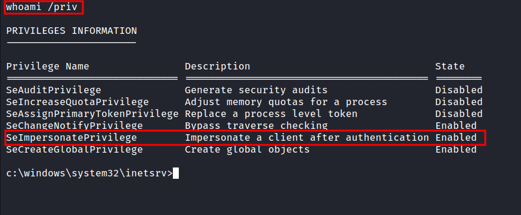
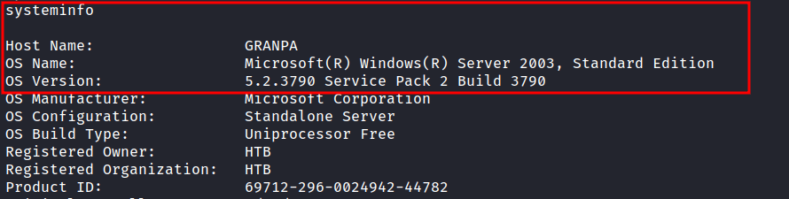
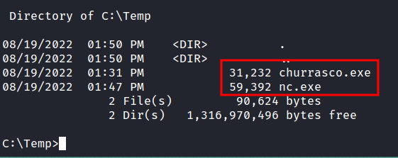

HackTheBox - Grandpa Writeup
Table of Contents
Nmap
Like always, I’m going to scan the IP Address by using Nmap.
# Nmap 7.92 scan initiated Fri Aug 5 21:51:15 2022 as: nmap -sCV -oN nmap/grandpa 10.10.10.14
Nmap scan report for 10.10.10.14
Host is up (0.66s latency).
Not shown: 999 filtered tcp ports (no-response)
PORT STATE SERVICE VERSION
80/tcp open http Microsoft IIS httpd 6.0
|_http-title: Under Construction
| http-methods:
|_ Potentially risky methods: TRACE COPY PROPFIND SEARCH LOCK UNLOCK DELETE PUT MOVE MKCOL PROPPATCH
| http-webdav-scan:
| Allowed Methods: OPTIONS, TRACE, GET, HEAD, COPY, PROPFIND, SEARCH, LOCK, UNLOCK
| Server Type: Microsoft-IIS/6.0
| Server Date: Fri, 05 Aug 2022 13:52:20 GMT
| Public Options: OPTIONS, TRACE, GET, HEAD, DELETE, PUT, POST, COPY, MOVE, MKCOL, PROPFIND, PROPPATCH, LOCK, UNLOCK, SEARCH
|_ WebDAV type: Unknown
|_http-server-header: Microsoft-IIS/6.0
Service Info: OS: Windows; CPE: cpe:/o:microsoft:windows
Service detection performed. Please report any incorrect results at https://nmap.org/submit/ .
# Nmap done at Fri Aug 5 21:52:34 2022 -- 1 IP address (1 host up) scanned in 79.44 seconds
That’s interesting! only 1 port is open. Port 80
Http: Microsoft IIS 6.0
It looks like I’m dealing with a Windows machine that’s running Microsoft IIS version 6.0 on port 80. To be honest, it sounds kind of an old version. So, I did some googling and found out, It is an old version of Microsoft IIS.

Well, here (image above) is tied to one particular Windows Server version. Without wasting any time, I start googling some exploits that might be useful to me.
Foothold: iis6 reverse shell
It took me no time at all to find this Github repos with reverse shell for this particular version of Microsoft IIS. Then, I downloaded the exploit. It looks like a python2 script. So, I’d change the file name with the .py extension at the end. Also, to be able to execute it. I must provide victim/attacker IP & victim/attacker PORT.

Windows: SeImpersonatePrivilege
I’m in as nt authority\network service user. However, I want to be nt authority\system :(. The first thing, I love to do is to check the privilege this (current) user have. This can be accomplished by running this command whoami /priv.


I’m not expecting that at all. It says SeImpersonatePrivilege is enabled. This can lead to token kidnapping/impersonate attacks and elevate my privilege into nt authority\system. Like always, I start googling these specific attacks on Microsoft Windows Server 2003 and I manage to find this exploit through this article on Medium.
SMBserver.py
To elevate my privilege, it must require nc.exe and churrasco.exe (exploit) on the victim machine. Well, I’ll try running the Powershell on the victim but nothing happens. Lucky for me, I found this article on “how to transfer files with smbserver.py”. So, I started the SMB server with impacket's smbserver.py and transferred those files into the victim machine.

Windows: Privilege Escalation
I’ve already transferred the file that is needed. So, I’m going to execute the exploit with nc.exe to establish the connection and also set up the listeners to catch the shell.